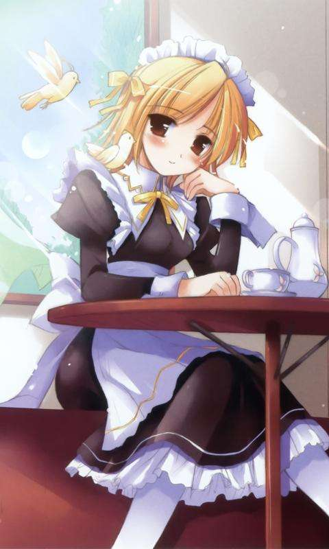

第五百零六章 真男人就要穿女仆装
“哝，事情就是这样的，所以，我这是正当防卫。”
月姬泰然自若的的面对自卫队叙述着刚刚发生的事情，月姬并没有装柔弱的兴趣，在东京时候时不时的就在料理街头小巷的混混，这个记录给了月姬极大的便利，即使不能和萝莉打，但是，随便打发三个酒鬼也不会被人怀疑什么。
“明白了，我们也在找这几个人，之后我们会再询问一些问题，然后就押送到伊塔里加城交给当地的城主处理。”
显然下面的人并不明白月姬被安排在特地的深意，也并没有被人告知月姬的武力，所以对于月姬毫发无损的打倒了三个成年男子这件事还是比较吃惊的，不过吃惊归吃惊，他们也没有女性就是弱者的刻板印象，不说这个世界的亚神萝莉是个女性，因为有为数不少的队友吃惊追求过伊丹队里的矮个子女孩却被她秒杀，这也刷新了他对女性这一形象的认知。
“那么我们走了。”点了点头，月姬也不理会没有开车过来而有些发愁怎么搬运三个臭烘烘的酒鬼的自卫官，打了个招呼之后便月姬转过头看着杜嘉说道，“我们走吧。”说完也不等杜嘉回应便迈开步子。
“好、好的。”杜嘉看着还躺在地上的酒鬼似乎很犹豫的样子，不过最终还是选择跟着月姬一起回去。
虽然精神异常，但是，并不代表杜嘉是傻子，大概，她在内心深处也心知肚明的吧，只不过，不愿意承认某个现实而装聋作哑自欺欺人。
“呜、要下雨了。”
月姬抬头天空，中午还艳阳高照，现在天空又变得乌云密布，这天气变得很快呢。
“快走吧。”
月姬提醒了下背后的杜嘉，然后就小跑了起来。
“真倒霉！”一边擦着湿漉漉的头发一边抱怨道。
虽然路程并不遥远，一路小跑月姬能很快的回到镇上，但是，雨还是在月姬回到镇上前落了下来，瓢泼大雨，即使仅仅被淋了半分钟，也将月姬淋的通透。
湿身p1ay！
咚咚——
“公主殿下，我拿衣服过来了。”
“请进。”
月姬听到门外的女声后很自然的回答道，因为来不及回去宿舍，所以月姬和杜嘉只能就近找了一家还算熟的旅馆避雨，顺便换一身衣服。
因为语言翻译的问题，月姬的名字还引起了一些误会，让人以为她是大和国那边的王女，比较熟悉的人大都已经解除了误会知道月姬其实只是大和那边的一个超年轻有为的大小姐而已，但是像是镇上的那些居民，很多都还是把月姬当做王女看。
解释起来比较麻烦，专门为此开广播解释感觉怪怪的，月姬也是听之任之的懒得去纠正，而作为尤弥尔的前社长，一个确实有钱有权的白富美，月姬也当得起这个称号，所以自卫官那些人很多也是略去前缀直接公主公主的称呼她。
这么一想就感觉头大！
月姬捂着额头，这种误会不解除的话，万一帝国那边有脑热的，不就会真的把她当公主对待派人来暗杀或者绑架自己吗？
“您的头不舒服吗？”旅馆的兔儿女佣捧着衣服关心的问道。
“没什么，黛利拉。”月姬摆了摆手，然后从女佣的手上接过衣服。
虽然这家店没有大和那边的日常服，但是幸好这里是在自卫队的庇护下座位一个特别贸易区存在的，款式暂且不提，作为在这里站稳的的店，起码不至于让月姬穿麻衣什么的，舒适度还算有保障。
“妹抖？”月姬展开黛利拉拿过来的衣服嘴角抽了抽，材质虽然好，但是，可以的话希望能保证下款式啊！！！
“真的非常抱歉，公主殿下。”黛利拉表现的很惶恐的样子，低下头道歉道：“据说这是大和国那边侍从的衣服，和我们这边贵族家的女仆穿的差不多，但是材质要更好一些，并且样式也更华丽一些，所以店长托人进了一些货打算过几天给我们统一换上这种衣服，目前我们店里女性穿的衣服只有这个。”
“……那就这样吧。”月姬叹了口气，还好进货的人比较正常，虽然这些女仆装都不是陈旧的维多利亚风格，但起码既不是超短裙款更不是情趣款的女仆装。
膝盖往下十公分的裙摆，还可以接受的保守款式。
看着另一边的杜嘉已经换好了衣服，月姬也麻利的换上。
“那么，我就先退下了，晚餐稍后我就给您送到房间里来。”黛利拉恭敬的说道。
“不了，我去下面吃 ，吃完我就回去宿舍换衣服，明天我会把衣服送回来的。”
月姬咬着头绳一边给自己梳马尾一边含糊的回应道，虽然喜欢看别人穿女仆装，但是自己的话就算了吧，今天是没办法才穿的，所以女仆的头饰就算了，随意扎了个马尾让头发不妨碍行动，着装便完成。
“哪里哪里，衣服您不用送回来也没关系的。”黛利拉摇了摇头说道。
“……”月姬抿着嘴沉默看着黛利拉。
“？”黛利拉似乎也被月姬注视的一头雾水。
“你不适合演这种恭顺的角色。”月姬在沉默了好一会儿才说道，她伸出手按在黛利拉的肩膀上继续说道，“我在兔子的眼睛里看到了狮子。”
“您在说什么啊。”黛利拉笑着说道。
“没什么。”感受到黛利拉肩膀上的肌肉有那么一瞬间的僵硬，月姬随意的瞄了眼神色如常的女佣耸了耸肩，“对了，不要对我那么恭敬，我知道你们翻译的时候把公主这个词直译作王女，但是实际上，那就是我的名字，我可不是什么王女。”月姬越过黛利拉一边说道一边走出房间，“我只是大和那边的……”月姬停下脚步回过头看着黛利拉，“姑且算是个商人这样的角色，稍微有钱的那种。”说完，月姬便消失在门框外。
“对了！”突然，月姬的脑袋从门框边上伸了出来，“晚餐我要豚骨拉面，大份的。”然后便缩回了脑袋向着餐厅走去。
如果这里提供的是中世纪系列的美食，月姬可不愿意留下来，异世界落后社会里的大多数食物味道都让人不敢恭维，不过这里是贸易区，住在这里的人大都从自卫队那边学到了不少大和国的料理，根据来过的人反馈，手艺已经出师了，有不少来这里学厨师的人都打算有一天能把异国的美食带回自己的家乡。
……
【突然发现，月姬貌似在不断的接触原著主要角色】
【P·L·A是敏感词，绝望，还能不能好好P1ay了？】
【cos不是我，别幻想了】